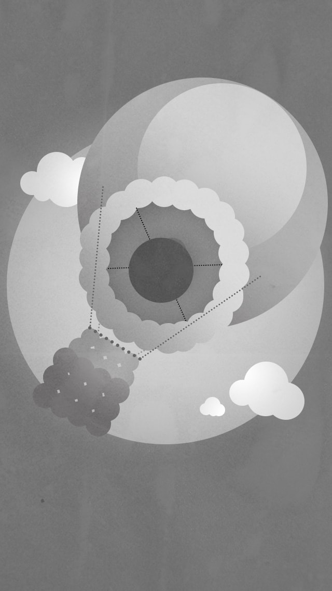

Point Exercise-
iPhone Wallpaper

The first draft point study with darker background and texture. I think the texture and the dark grey give this piece a dreamy yet dystopian and dark atmosphere.
I think that the added texture makes this piece look like it depicts a scene set during one of the World Wars due to the lack of colour, added noise and texture and the peaceful yet isolated imagery of a hot air balloon without any passengers drifting into the sky.